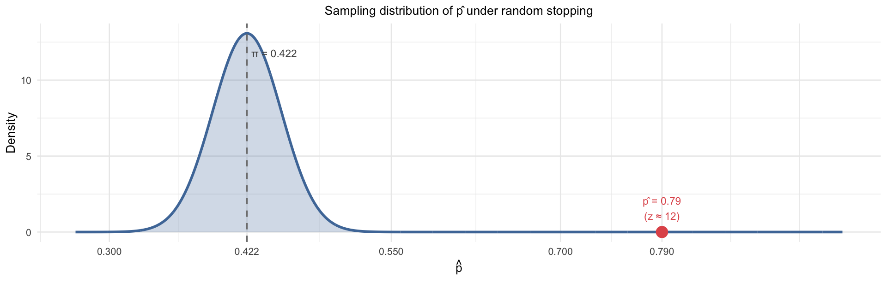
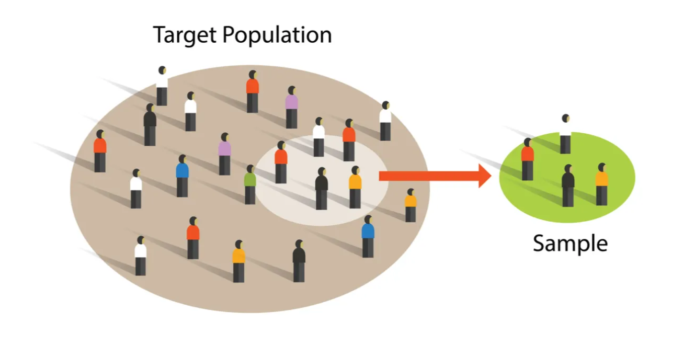
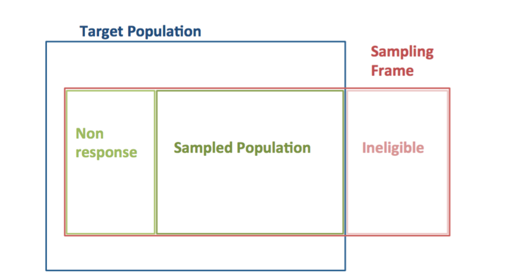
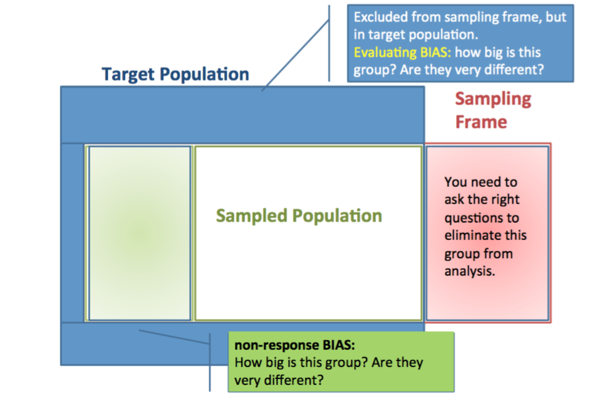
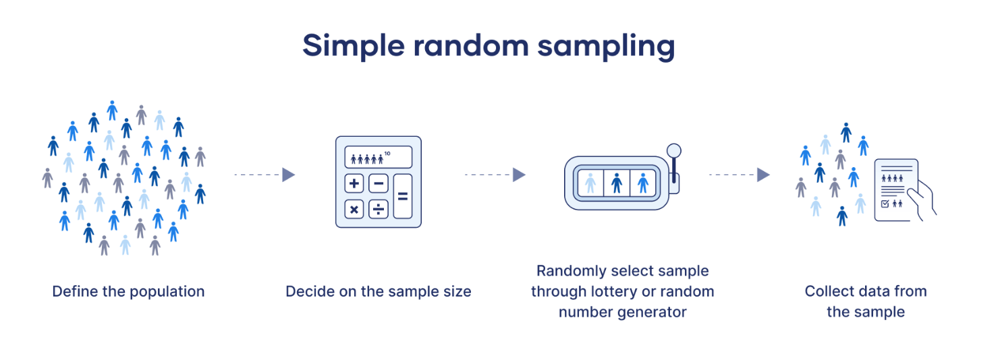
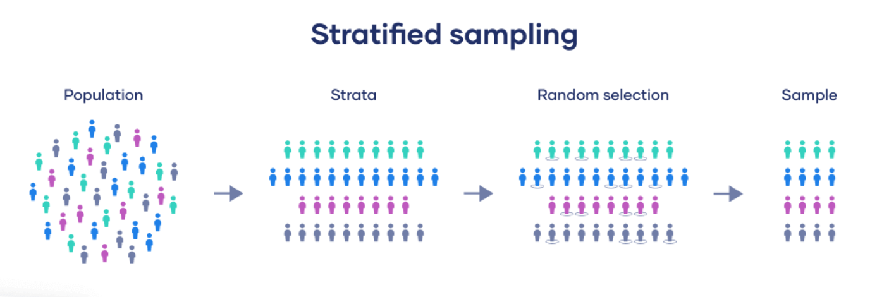
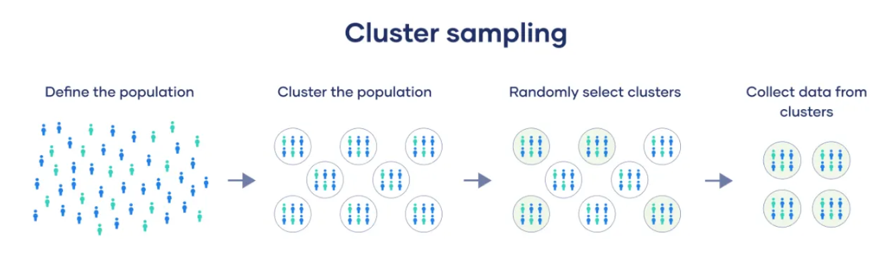
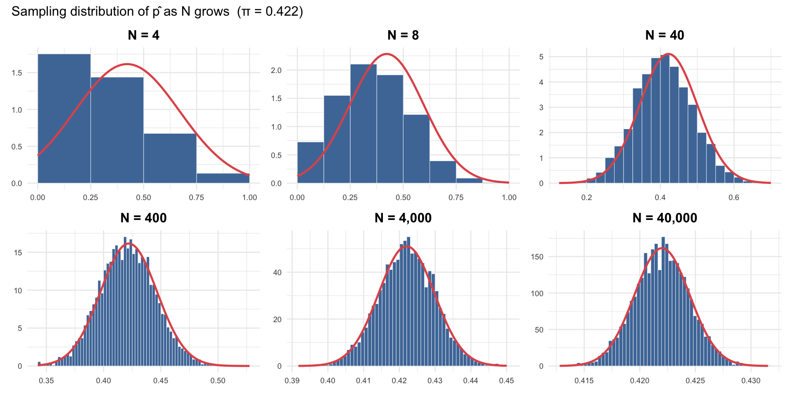
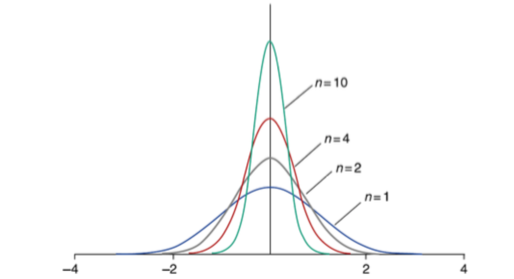
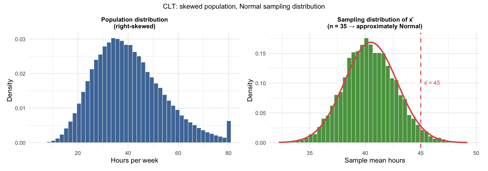

Week 7
Sociology 106: Quantitative Sociological Methods
Housekeeping
HW 4:
- Great job overall: minor issues across the class.
Open Week Topic:
- Will send out a survey for topics for open week after class today. Please answer by March 17.
Where We Are in the Course
- Weeks 5–6: rules of probability + probability models (Bernoulli, Binomial, Normal)
- This week (Week 7): sampling distributions and the Central Limit Theorem
- Next week (Week 8): confidence intervals
- Then (Week 9): hypothesis testing
Main idea: We’ve been building probability models of populations. Today we ask: what happens when we draw a sample—and then another, and another? The answer is what makes all of statistical inference possible.
Agenda
Admin discussion:
- Research paper proposals and annotated bibliography
Statistical content — three parts:
- Part 1: Sampling — from populations to data
- Part 2: Sampling distributions — statistics vary from sample to sample
- Part 3: The Central Limit Theorem — the key that unlocks inference
In-class lab:
- work through some basic data management for your research project
Research Paper Proposals
Halfway done,will finish by next week. Overall, super interesting topics ! Some general feedback:
- Walk through specific scenarios to identify mechanisms: imagine a specific individual and think through their experiences will help you foresee issues with your design, raise clarifying questions, help you defend your work, etc. What is the mechanism that you are really asking about?
- Eviction on employment status: how does their recent homelessness status impacts ability to keep their job? Where do they sleep? Where do they get mail? Shower? How does all this impact their performance at work?
- Gender on income: what types of jobs is this person applying to? How does the imbalance of household responsibilities shape their work/time? How might they be viewed by potential employers?
Research design: How can you construct variables of interest? How do the variables in your data relate to your hyptotheses? What units of analysis may be most appropriate? Are there other issues you may want to think about going forward?
What has already been written in the literature: some topics have been studied a lot, which is a good sign that your question is important! If your question seems already answered: try a different data source, or look for related unanswered questions in paper conclusions.
Annotated Bibliography
Due March 19
Identify ten scholarly sources related to your research question
For each source: in two short paragraphs:
- summarize what the source is arguing
- explain how it relates to your research question
- Articles in academic journals
- Academic books
- Book chapters from edited volumes
- Non-political reports from research centers / government agencies
- Blogs, internet / newspaper articles
- Wikipedia pages
- Political reports from research centers / govt
Here is a link to an example of one source: you will need 10.
Strategies to Find Academic Articles
- Search on Google Scholar or JSTOR: take your independent and dependent variables and searching for:
“effect of independent variable on dependent variable”
May need to use a UC Berkeley Library proxy to access some academic articles. This is a helpful webpage for using the proxy server and here is a link to make a virtual appointment for research help.
- Find one good citation on google scholar and see who cites them: see the
cited byicon under the citation - Find a relevant article, mine useful citations from the literature review
How to Read Academic Articles
| Section | What to look for |
|---|---|
| Abstract | Overview: research question, data, main result — read first |
| Introduction | Slightly more detailed than abstract; same format |
| Conclusion | Results, alternative explanations, limitations — and future research topics |
| Background / Lit review | Previous research; a good source of additional citations |
| Data section | How the sample was constructed; what data sources researchers use |
| Methods | Don’t worry about this too much yet! |
Questions?
Part 1: From Populations to Samples
How do we go from an abstract population to real data we can analyze?
Sampling: Basic Concepts
| Population | Sample | |
|---|---|---|
| Concept | The whole universe a study aspires to generalize to | The subset of the population we actually observe |
| Quantity | Parameter — a number describing the population (usually unknown) | Statistic — a number computed from the data |
| Example | True proportion of Philadelphia residents who are African American: \(\pi = 0.422\) | Proportion of stopped drivers who were African American: \(\hat{p} = 0.79\) |
The goal of statistical inference: use a sample statistic to learn about a population parameter — we’ve been building toward this all semester
Sampling from a Population
Start with a population — every individual you want to study. In our running example, this is all 1.45 million residents of Philadelphia in 1997. Since you can’t talk to everyone, you have to take a representive sample, that you hope will approximate your population.

Sampling from a Population
A sample is drawn from the population — the individuals we actually observe. The 262 drivers stopped by police are our sample, far smaller than the full population.

Sampling from a Population
Key question: is our sample representative? Does it reflect the composition of the population? This depends entirely on the sampling design — random samples are representative; convenience samples often are not.

Sample Design
To do inferential statistics, we need a representative sample — ideally, each unit of the population has an equal chance of being included
We also want samples that are large enough for precision, which increases with sample size
Types of Sampling Designs
Simple random sample: Use a random number generator to select from a population list

Stratified random sample: Divide population into homogenous groups (strata), then randomly sample within each stratum
- Generally improves precision
- Can over-sample smaller strata (e.g., minority groups) to make inferences within those groups

Cluster sampling:
- Create subpopulations (clusters)
- Randomly select a sample of clusters
- Randomly select units within sampled clusters

Stratified vs. Cluster Sampling
Key difference: cluster sampling selects only some groups; stratified sampling samples from all strata.
When to use which:
- Cluster: use when sampling individuals directly is costly (e.g., 4th graders in California – schools)
- Stratified: use when you need better representation of known subgroups (e.g., GPA by major – class year)
Representative Samples & Sample Weights
True random samples are almost never feasible — we rarely have a complete population list
But we often know the probability that each individual would be selected, based on demographics, geography, or other characteristics
Sample Weights are set inversely proportional to the probability of selection:
- Individuals less likely to be sampled → higher weight
- Individuals more likely to be sampled → lower weight
- Result: a weighted sample that mirrors the full population
The GSS uses cluster sampling. Within each selected household, only one adult is chosen:
- Individuals in larger households are less likely to be selected → higher weights
- Additional weights for oversampled Black respondents
- Additional weights for non-responders on the first contact
Always check whether your dataset uses weights, and apply them in R
Part 2: Sampling Distributions
Statistics vary from sample to sample — they have their own distributions
What is a Sampling Distribution?
A sampling distribution is the probability distribution of a sample statistic computed across many independent samples from the same population
Three distributions you must keep straight:
| Distribution | What it describes | Philadelphia example |
|---|---|---|
| Population | All individuals in the population | 1.45M Philadelphia residents, 42.2% African American |
| Sample (data) | The individuals in our sample | 262 police stops in 1997 |
| Sampling | How our statistic would vary across repeated samples | Distribution of \(\hat{p}\) across many random samples of 262 |
Sampling Distribution of a Proportion
Recall: \(X \sim B(n, \pi)\) has mean \(n\pi\) and SD \(\sqrt{n\pi(1-\pi)}\)
The sample proportion \(\hat{p} = X/n\) divides that count by \(n\). It’s sampling distribution:
\[\mu_{\hat{p}} = \frac{n\pi}{n} = \pi \qquad SE(\hat{p}) = \frac{\sqrt{n\pi(1-\pi)}}{n} = \sqrt{\frac{\pi(1-\pi)}{n}}\]
Same formula as last week’s Binomial SD — divided by \(n\).
\[\mu_{\hat{p}} = \pi \qquad \text{(unbiased — centered on the true proportion)}\]
\[SE(\hat{p}) = \sqrt{\frac{\pi(1-\pi)}{n}} \qquad \text{(shrinks as } n \text{ grows)}\]
We use standard error (SE) rather than standard deviation to signal that this is the spread of a sampling distribution, not of raw data.
The SE answers: on average, how far will our \(\hat{p}\) fall from the true \(\pi\)?
- Small \(n\) → large SE → estimates can be far from the truth
- Large \(n\) → small SE → estimates are reliably close to the truth
Racial Profiling: A Worked Example
Data from Philadelphia, 1997:
- 262 police car stops were recorded
- 207 of the stopped drivers were African American (\(\hat{p} = 207/262 = 0.79\))
- Philadelphia’s population at the time was 42.2% African American (\(\pi = 0.422\))
Question: If drivers were stopped at random, how likely is it that 79% of stopped drivers would be African American?
Assume random stopping: \(X \sim B(262, 0.422)\)
The sampling distribution of \(\hat{p}\) under random stopping:
\[\mu_{\hat{p}} = 0.422\]
\[SE(\hat{p}) = \sqrt{\frac{0.422 \times 0.578}{262}} \approx 0.030\]
Observed: \(\hat{p} = 0.79\)
Distance from expected:
\[z = \frac{0.79 - 0.422}{0.030} \approx 12 \text{ standard errors above the mean}\]
Under random stopping, \(\hat{p} = 0.79\) is essentially impossible — it lies 12 SEs above what we’d expect. The sampling distribution reveals that this pattern cannot be explained by chance, but some other bias.
Visualizing the Sampling Distribution
As \(N\) increases, \(\hat{p}\) becomes tighter and more bell-shaped — the Central Limit Theorem in action:

Sampling Distribution of the Mean
For a random sample of size \(n\) from a population with mean \(\mu\) and standard deviation \(\sigma\):
\[\mu_{\bar{x}} = \mu \qquad \text{(sample mean is unbiased)}\]
\[SE(\bar{x}) = \frac{\sigma}{\sqrt{n}} \qquad \text{(precision increases with sample size)}\]
Doubling \(n\) cuts the SE by a factor of \(\sqrt{2}\) — not 2. Precision is expensive!
The problem: You manage a pizza restaurant and want to estimate your true average daily sales. You know from years of records that daily sales average \(\mu = \$900\) with a standard deviation of \(\sigma = \$300\) — but sales fluctuate day to day. If you observe only \(n = 7\) days, how close will your sample mean be to the true average?
\[SE(\bar{x}) = \frac{\$300}{\sqrt{7}} \approx \$113\]
A 7-day average will typically be within \(\pm\$226\) (2 SEs) of the true mean — so your estimate could easily be off by over $200. Observing 28 days instead cuts the SE in half: \(\frac{\$300}{\sqrt{28}} \approx \$57\), giving a much more reliable estimate.
As \(n\) grows, the sampling distribution narrows around the true mean \(\mu\):

Part 3: The Central Limit Theorem
The theorem that makes all of statistical inference possible
The Central Limit Theorem
This is one of the most powerful theorems in all of statistics.
If repeated independent samples of size \(N\) are drawn from any population (regardless of its shape) having mean \(\mu\) and standard deviation \(\sigma\), then — as \(N\) becomes large — the sampling distribution of the sample mean approaches a Normal distribution:
\[\bar{x} \;\sim\; N\!\left(\mu,\; \frac{\sigma}{\sqrt{N}}\right)\]
Why is this remarkable? The population can be skewed, bimodal, uniform — it doesn’t matter. As long as \(N\) is large enough, \(\bar{x}\) is approximately Normal.
This is why the Normal distribution appears everywhere in statistics — and why the tools we build next all work.
CLT: Interactive Demo
How Large a Sample?
The sampling distribution approaches normality faster for more symmetric populations:
- If the population distribution is Normal, the sampling distribution is Normal for any \(n\)
- The more skewed the population, the larger \(n\) must be
- In practice: \(n > 30\) is usually sufficient for most real-world distributions
Why this matters for your research: Most survey samples (GSS, IPUMS, etc.) have \(n\) in the hundreds or thousands — well above the threshold where CLT guarantees apply. This is what lets us do inference from survey data without knowing the full population distribution.
Weekly Work Hours: A Worked Example
GSS data show that among employed US adults, weekly work hours are right-skewed: \(\mu = 40.5\) hours, \(\sigma = 14\) hours.
A labor researcher samples \(n = 35\) workers at a specific company and finds a mean of 45 hours/week.
Question: If this company is typical of the US workforce, how unusual is a sample mean of 45 hours or higher?
The population is right-skewed — but \(n = 35 > 30\), so the CLT applies:
\[SE(\bar{x}) = \frac{\sigma}{\sqrt{n}} = \frac{14}{\sqrt{35}} \approx 2.37\]
\[\bar{x} \sim N(40.5,\; 2.37)\]
Even though individual work hours are skewed, the sample mean is approximately Normal.
Compute the probability in R
pnorm(45, mean = 40.5, sd = 14 / sqrt(35), lower.tail = FALSE)[1] 0.02861193About 2.9% — if the company were typical, a mean this high would occur only 3% of the time by chance. This gives the researcher grounds to argue the company is unusually demanding.

Key Takeaways
- Populations have parameters; samples have statistics — and they’re different things
- A sampling distribution describes how a statistic varies across many hypothetical samples
- The standard error (SE) measures this variability — it shrinks as \(\sqrt{n}\) grows
- The Central Limit Theorem guarantees that sample means are approximately Normal for large \(n\), regardless of the population shape
Why This Matters for the Rest of the Course
- Next week (Week 8): Confidence intervals use the SE and the Normal approximation to build a range of plausible parameter values
- Week 9: Hypothesis tests ask “how far is our statistic from what we’d expect?” — measured in standard errors
- Weeks 11–13 (Regression): Every regression coefficient comes with a standard error and a significance test — all built on exactly the CLT logic we developed today
Questions?
Assignments
Weekly Assignment #6
- Due Thursday, March 12 by 11:59 PM
- Format: mix of word problems and R (similar to previous weeks)
Annotated Bibliography
- Due Thursday, March 19
- Finding 10 relevant papers takes time — start early!
- Don’t expect the first papers you find to be relevant to your project
- Happy to help during office hours
In-class Lab #4
- Download
lab4.qmdfrom bCourses under “assignments” > “Lab #4” - Place
lab4.qmdin yourlabsfolder - Use the
Explorerbutton on the left to find and openlab4.qmd - Let’s work through it together!